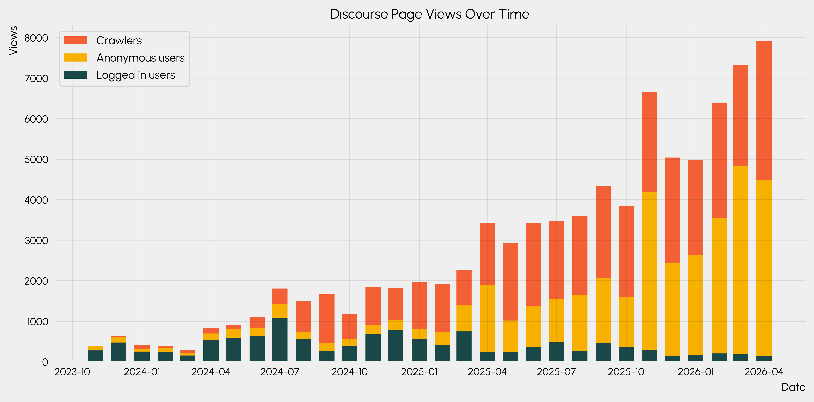
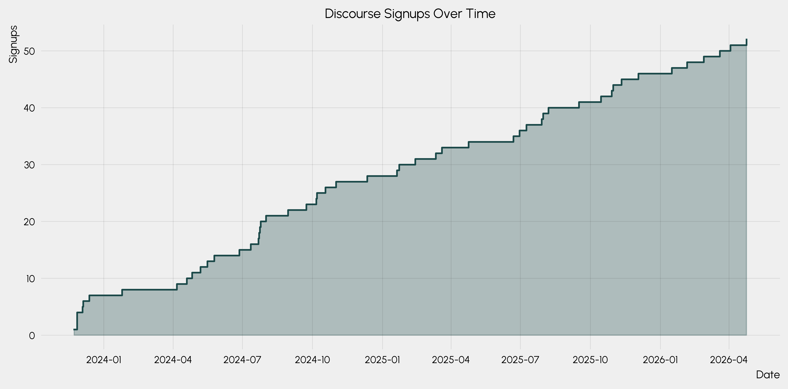
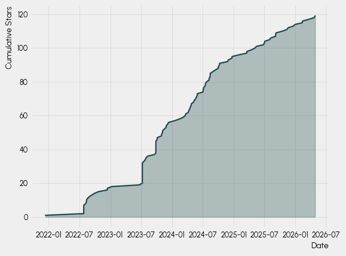
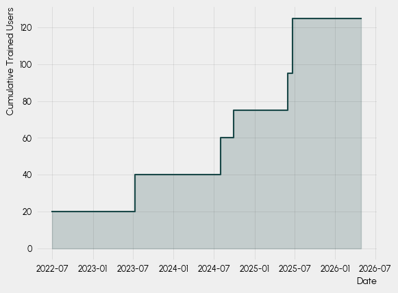
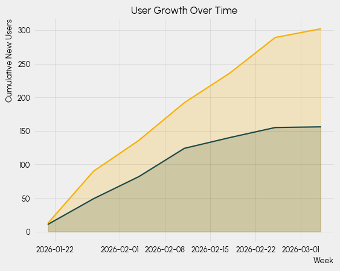
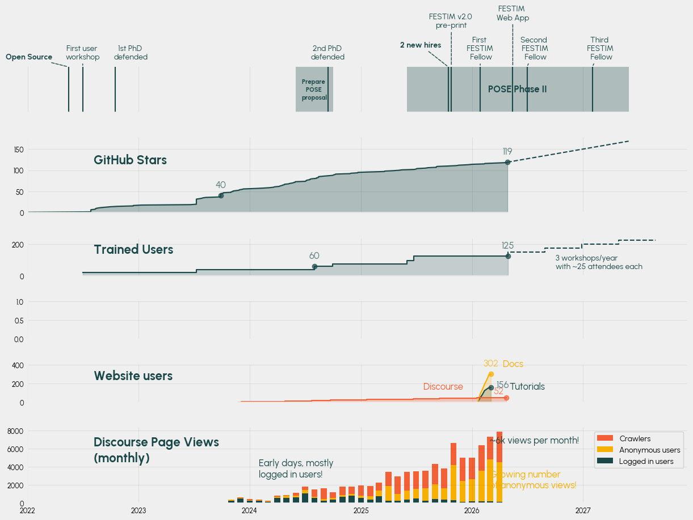

import pandas as pd
from datetime import datetime
import morethemes as mt
import matplotlib.pyplot as plt
mt.set_theme("urban")
# https://coolors.co/1a4848-f7b000-f46036-c9f2c7-aceca1
plt.rcParams["axes.prop_cycle"] = plt.cycler(
color=["#1a4848", "#f7b000", "#f46036", "#c9f2c7", "#aceca1"]
)
# remove top and right spines for all plots in matplotlib params
plt.rcParams["axes.spines.top"] = False
plt.rcParams["axes.spines.right"] = False
from pyfonts import load_google_font
bold_font = load_google_font("Urbanist", weight="bold")
Discourse page views#
import json
import os
import requests
import dotenv
url = "https://festim.discourse.group/admin/reports/consolidated_page_views.json"
dotenv.load_dotenv()
API_KEY = os.getenv("DISCOURSE_API_KEY")
assert API_KEY is not None, "DISCOURSE_API_KEY environment variable is not set"
end_date = datetime.now()
start_date = datetime(2022, 1, 1)
url += f"?start_date={start_date}&end_date={end_date}"
payload = {}
headers = {"Accept": "application/json", "Api-Key": API_KEY, "Api-Username": "remidm"}
response = requests.request("GET", url, headers=headers, data=payload)
response_data = json.loads(response.text)
# print(response_data)
data = pd.DataFrame(response_data["report"]["data"])
data.head()
| req | label | color | data | |
|---|---|---|---|---|
| 0 | page_view_logged_in | Logged in users | #1EB8D1 | [{'x': '2023-11-23', 'y': 41}, {'x': '2023-11-... |
| 1 | page_view_anon | Anonymous users | #9BC53D | [{'x': '2023-11-23', 'y': 9}, {'x': '2023-11-2... |
| 2 | page_view_crawler | Crawlers | #721D8D | [{'x': '2023-11-24', 'y': 2}, {'x': '2023-11-2... |
data_filtered = {}
for row in data.itertuples():
xs = [point['x'] for point in row.data]
ys = [point['y'] for point in row.data]
# convert to datetime
xs = [datetime.strptime(x, "%Y-%m-%d") for x in xs]
data_filtered[row.label] = (xs, ys)
# make a new dataframe with Day as the index and "logged in", "anonymous", "crawlers" as columns
all_days = set()
for label, (xs, ys) in data_filtered.items():
all_days.update(xs)
all_days = sorted(all_days)
df = pd.DataFrame(columns=data_filtered.keys(), index=all_days)
for label, (xs, ys) in data_filtered.items():
for x, y in zip(xs, ys):
df.loc[x, label] = y
# set index name
df.index.name = "Day"
# convert index to column
df.reset_index(inplace=True)
df
| Day | Logged in users | Anonymous users | Crawlers | |
|---|---|---|---|---|
| 0 | 2023-11-23 | 41 | 9 | NaN |
| 1 | 2023-11-24 | 15 | 5 | 2 |
| 2 | 2023-11-26 | 1 | 18 | NaN |
| 3 | 2023-11-27 | 75 | 25 | 1 |
| 4 | 2023-11-28 | 92 | 41 | 1 |
| ... | ... | ... | ... | ... |
| 878 | 2026-04-24 | 30 | 176 | 126 |
| 879 | 2026-04-25 | NaN | 68 | 148 |
| 880 | 2026-04-26 | 1 | 73 | 112 |
| 881 | 2026-04-27 | 4 | 223 | 130 |
| 882 | 2026-04-28 | NaN | 343 | 41 |
883 rows × 4 columns
# group per month based on the "Day" index (sum numeric columns only)
discourse_page_views_monthly = df.groupby(
df["Day"].dt.to_period("M")
)[["Logged in users", "Anonymous users", "Crawlers"]].sum()
discourse_page_views_monthly.head()
| Logged in users | Anonymous users | Crawlers | |
|---|---|---|---|
| Day | |||
| 2023-11 | 276 | 113 | 4 |
| 2023-12 | 474 | 124 | 41 |
| 2024-01 | 251 | 70 | 96 |
| 2024-02 | 242 | 92 | 58 |
| 2024-03 | 153 | 49 | 77 |
import matplotlib.pyplot as plt
def plot_page_views(width=20):
x = (
discourse_page_views_monthly.index.to_timestamp()
if hasattr(discourse_page_views_monthly.index, "to_timestamp")
else discourse_page_views_monthly.index
)
plt.bar(
x,
discourse_page_views_monthly["Logged in users"],
label="Logged in users",
width=width,
)
plt.bar(
x,
discourse_page_views_monthly["Anonymous users"],
bottom=discourse_page_views_monthly["Logged in users"],
label="Anonymous users",
width=width,
)
plt.bar(
x,
discourse_page_views_monthly["Crawlers"],
bottom=discourse_page_views_monthly["Logged in users"]
+ discourse_page_views_monthly["Anonymous users"],
label="Crawlers",
width=width,
)
plt.figure(dpi=600, figsize=(10, 5))
# plot the data - convert PeriodIndex to timestamps for plotting
plot_page_views(width=20)
plt.title("Discourse Page Views Over Time")
plt.xlabel("Date")
plt.ylabel("Views")
plt.legend(reverse=True)
plt.tight_layout()
plt.show()

Discourse signups#
url = "https://festim.discourse.group/admin/reports/signups.json"
url += f"?chart_grouping=monthly&end_date={end_date}&start_date={start_date}"
payload = {}
headers = {"Accept": "application/json", "Api-Key": API_KEY, "Api-Username": "remidm"}
response = requests.request("GET", url, headers=headers, data=payload)
response
response_data = json.loads(response.text)
response_data
{'report': {'type': 'signups',
'title': 'Signups',
'xaxis': 'Day',
'yaxis': 'Number of signups',
'description': 'New account registrations for this period.',
'description_link': None,
'data': [{'x': '2023-11-23', 'y': 1},
{'x': '2023-11-27', 'y': 3},
{'x': '2023-12-04', 'y': 1},
{'x': '2023-12-05', 'y': 1},
{'x': '2023-12-13', 'y': 1},
{'x': '2024-01-25', 'y': 1},
{'x': '2024-04-06', 'y': 1},
{'x': '2024-04-19', 'y': 1},
{'x': '2024-04-26', 'y': 1},
{'x': '2024-05-07', 'y': 1},
{'x': '2024-05-16', 'y': 1},
{'x': '2024-05-25', 'y': 1},
{'x': '2024-06-27', 'y': 1},
{'x': '2024-07-12', 'y': 1},
{'x': '2024-07-22', 'y': 1},
{'x': '2024-07-23', 'y': 1},
{'x': '2024-07-24', 'y': 1},
{'x': '2024-07-25', 'y': 1},
{'x': '2024-08-01', 'y': 1},
{'x': '2024-08-30', 'y': 1},
{'x': '2024-09-23', 'y': 1},
{'x': '2024-10-06', 'y': 1},
{'x': '2024-10-07', 'y': 1},
{'x': '2024-10-18', 'y': 1},
{'x': '2024-11-01', 'y': 1},
{'x': '2024-12-12', 'y': 1},
{'x': '2025-01-20', 'y': 1},
{'x': '2025-01-23', 'y': 1},
{'x': '2025-02-13', 'y': 1},
{'x': '2025-03-12', 'y': 1},
{'x': '2025-03-20', 'y': 1},
{'x': '2025-04-24', 'y': 1},
{'x': '2025-06-22', 'y': 1},
{'x': '2025-06-30', 'y': 1},
{'x': '2025-07-09', 'y': 1},
{'x': '2025-07-29', 'y': 1},
{'x': '2025-07-31', 'y': 1},
{'x': '2025-08-07', 'y': 1},
{'x': '2025-09-16', 'y': 1},
{'x': '2025-10-15', 'y': 1},
{'x': '2025-10-29', 'y': 1},
{'x': '2025-10-31', 'y': 1},
{'x': '2025-11-11', 'y': 1},
{'x': '2025-12-03', 'y': 1},
{'x': '2026-01-16', 'y': 1},
{'x': '2026-02-05', 'y': 1},
{'x': '2026-02-27', 'y': 1},
{'x': '2026-03-20', 'y': 1},
{'x': '2026-04-03', 'y': 1},
{'x': '2026-04-24', 'y': 1}],
'start_date': '2022-01-01T00:00:00Z',
'end_date': '2026-04-28T23:59:59Z',
'prev_data': None,
'prev_start_date': '2017-09-05T00:00:00Z',
'prev_end_date': '2022-01-01T00:00:00Z',
'prev30Days': 0,
'dates_filtering': True,
'report_key': 'reports:signups:20220101:20260428:[:total, :prev30Days]:4:1',
'primary_color': 'rgba(81,131,155,1)',
'secondary_color': 'rgba(81,131,155,0.1)',
'available_filters': [{'id': 'group', 'type': 'group', 'default': None}],
'labels': [{'type': 'date', 'property': 'x', 'title': 'Day'},
{'type': 'number', 'property': 'y', 'title': 'Count'}],
'average': False,
'percent': False,
'higher_is_better': True,
'modes': ['chart', 'table'],
'icon': 'user-plus',
'total': 52}}
report_data = response_data["report"]["data"]
signups_data_x = [datetime.strptime(point['x'], "%Y-%m-%d") for point in report_data]
signups_data_y = [point['y'] for point in report_data]
import numpy as np
def plot_signups(fill_between=True, **kwargs):
cumulative_signups = np.cumsum(signups_data_y)
(l,) = plt.step(signups_data_x, cumulative_signups, where="post", **kwargs)
if fill_between:
plt.fill_between(signups_data_x, cumulative_signups, alpha=0.3, color=l.get_color(), step="post")
return signups_data_x, cumulative_signups
plt.figure(dpi=600, figsize=(10, 5))
# plot the data - convert PeriodIndex to timestamps for plotting
plot_signups()
plt.title("Discourse Signups Over Time")
plt.xlabel("Date")
plt.ylabel("Signups")
plt.tight_layout()
plt.show()

Star history#
import requests
OWNER = "festim-dev"
REPO = "festim"
url = f"https://api.github.com/repos/{OWNER}/{REPO}/stargazers"
headers = {
"Accept": "application/vnd.github.v3.star+json",
# "Authorization": f"Bearer {TOKEN}", # uncomment for higher rate limits
}
page = 1
all_stars = []
while True:
url = f"https://api.github.com/repos/{OWNER}/{REPO}/stargazers"
# NOTE there seems to be a limit of 100 per page, so we need to paginate through the results
response = requests.get(
url, headers=headers, params={"per_page": 100, "page": page}
)
data = response.json()
if not data:
break
all_stars.extend(data)
page += 1
# Each item now has "starred_at" and "user"
for star in all_stars:
print(star["starred_at"], star["user"]["login"])
2021-12-13T20:33:01Z mougenj
2022-07-27T12:22:30Z stephen-dixon
2022-07-27T12:34:14Z shimwell
2022-07-27T12:42:03Z jhillairet
2022-07-27T13:30:40Z BilelJegham
2022-07-27T13:44:39Z tianyikillua
2022-07-27T18:36:04Z giovanni-mariano
2022-08-08T22:30:23Z tkoyama010
2022-08-12T11:52:39Z StephDlpmtn
2022-08-12T23:59:54Z pshriwise
2022-08-19T06:58:50Z tengfeideng
2022-08-29T13:12:55Z ehodille
2022-09-13T15:36:45Z MKastek
2022-09-29T07:30:47Z liliangillier
2022-10-23T08:21:00Z husni-zuhdi
2022-12-13T22:51:24Z jlogan-cfs
2022-12-14T16:29:29Z lcarasik
2023-01-10T00:15:43Z george-poole
2023-06-21T06:59:44Z XuesenYang
2023-07-09T12:14:02Z FranFani
2023-07-09T12:31:20Z DinushaJ
2023-07-09T14:12:28Z FuerstT
2023-07-09T15:41:32Z PXC998
2023-07-09T15:41:38Z jehbice
2023-07-09T15:41:46Z niamh-holland
2023-07-09T15:41:47Z steven-van-boxel
2023-07-09T15:41:49Z zhengs-cn
2023-07-09T15:41:51Z AMPechero
2023-07-09T15:41:57Z odvorak89
2023-07-09T15:42:15Z LukeFisherUKAEA
2023-07-09T15:42:18Z AKI-1997
2023-07-09T15:42:45Z GazelleH
2023-07-19T11:47:10Z jhdark
2023-07-27T07:21:49Z Ttw0626
2023-07-31T08:56:03Z gnikit
2023-08-09T13:23:40Z GdelacuerdaV
2023-09-19T13:32:58Z Allentro
2023-09-27T15:51:43Z Oliverator
2023-09-27T15:51:50Z paulbrrn
2023-09-27T15:52:23Z gareth13479
2023-09-27T15:52:58Z inoseel
2023-09-27T15:53:51Z lcandidokf
2023-09-27T15:55:19Z stefan-richr
2023-09-27T15:55:21Z LukeTK1998
2023-09-28T06:37:03Z albcir
2023-10-05T15:08:52Z SamueleMeschini
2023-10-06T02:03:16Z zhuzihao1998
2023-10-30T23:02:35Z sohhae
2023-10-31T19:47:40Z allen-adastra
2023-11-06T10:20:41Z guangmingzhou2021
2023-11-06T16:20:16Z akoen
2023-11-15T17:05:27Z gabriele-ferrero
2023-11-26T22:40:24Z tadash10
2023-11-28T08:17:39Z ekremekc
2023-12-06T14:54:19Z xiaochun-li
2023-12-11T14:05:16Z dongdong0159
2024-01-16T15:42:01Z WeaverC20
2024-02-14T08:20:49Z KulaginVladimir
2024-03-06T20:03:19Z kaelyndunnell
2024-03-18T23:34:49Z rwalkerlewis
2024-03-22T17:18:28Z r-tomlin
2024-04-06T15:51:59Z alexjackson1
2024-04-09T16:24:07Z namurphy
2024-04-15T09:15:47Z SteSeg
2024-04-18T10:17:44Z hanoodle
2024-04-23T13:31:26Z haohaoxuexi101
2024-04-24T14:24:41Z repositony
2024-05-07T20:53:39Z Callebez
2024-05-11T21:28:08Z Isabelle778
2024-05-20T06:05:23Z zjbergstrom
2024-05-24T21:51:25Z rmchurch
2024-05-29T10:49:08Z chenray844
2024-05-29T19:26:32Z rekomodo
2024-07-02T14:57:00Z emmanuelroque
2024-07-03T22:00:43Z ThomasFabula
2024-07-04T16:05:45Z nickrazes
2024-07-09T16:19:25Z jbae11
2024-07-17T04:55:30Z RemDelaporteMathurin
2024-07-17T07:14:47Z ymbkxc
2024-07-23T13:34:03Z JonathanGSDUFOUR
2024-08-07T13:51:23Z EduardoGO-UKAEA
2024-08-07T13:52:13Z IFV-Git
2024-08-13T11:04:54Z miklavrent
2024-08-14T12:04:59Z Ly0n
2024-08-14T14:10:13Z Sandalots
2024-08-28T23:51:54Z Anisomorphism
2024-09-13T13:55:37Z c-uiiin
2024-09-30T07:25:47Z jon-proximafusion
2024-10-02T07:43:39Z guillermogf
2024-10-07T19:45:47Z JDPS
2024-10-09T06:38:02Z YongYahn
2024-11-25T05:04:27Z yrrepy
2024-11-29T08:55:49Z church89
2024-12-20T20:51:45Z DemanovAE
2024-12-21T16:42:56Z veliki-filozof
2025-01-30T18:54:33Z mauveferret
2025-03-18T16:54:56Z jons-pf
2025-03-19T18:41:04Z mvernacc
2025-04-16T05:57:26Z queezz
2025-05-05T16:48:01Z mfhbam
2025-05-15T08:00:53Z crtms
2025-06-25T07:09:52Z IHaydon
2025-07-01T15:26:58Z YehorYudinIPP
2025-07-03T11:55:12Z AdriaLlealS
2025-07-31T14:45:23Z valderrama-juan
2025-08-08T13:17:08Z griffda
2025-09-05T13:32:54Z SIDNEYHJ
2025-09-05T16:45:42Z hhy2022
2025-09-08T07:38:30Z Valtro1s
2025-10-14T16:08:16Z qyan-github
2025-11-10T21:37:05Z gracecatharine
2025-11-19T00:36:18Z leyi04
2025-12-18T08:33:39Z FlorianStolz-KF
2025-12-30T12:13:48Z AaronValverdee
2026-02-10T06:14:30Z nolmacdonald
2026-02-11T23:29:43Z louisbutt338
2026-03-19T21:42:46Z HasanGhotme
2026-04-22T03:02:22Z 1008611-blue
2026-04-27T11:17:50Z SangtiHoki
from numpy import cumsum
from datetime import datetime
# Convert "starred_at" to datetime and sort
star_dates = sorted(
[datetime.strptime(star["starred_at"], "%Y-%m-%dT%H:%M:%SZ") for star in all_stars]
)
# Create a cumulative count of stars over time
cumulative_stars = cumsum([1] * len(star_dates))
import matplotlib.pyplot as plt
def plot_star_history(fillbetween=True):
(l,) = plt.plot(star_dates, cumulative_stars)
if fillbetween:
plt.fill_between(star_dates, cumulative_stars, alpha=0.3, color=l.get_color())
return l
plot_star_history()
plt.xlabel("Date")
plt.ylabel("Cumulative Stars")
Text(0, 1, 'Cumulative Stars')

User workshops#
import numpy as np
workshop_data = [
{
"name": "SOFE 2025",
"date": datetime(2025, 6, 23),
"attendees": 30,
},
{
"name": "SOFE 2023",
"date": datetime(2023, 7, 9),
"attendees": 20,
},
{
"name": "CEA LMJ",
"date": datetime(2025, 6, 1),
"attendees": 20,
},
{
"name": "UKAEA",
"date": datetime(2024, 8, 1),
"attendees": 20,
},
{
"name": "IPP Garching",
"date": datetime(2024, 9, 30),
"attendees": 15,
},
{
"name": "Kyoto Fusioneering",
"date": datetime(2022, 7, 1),
"attendees": 20,
},
]
def plot_trained_users_over_time(workshop_data, fill_between=True):
_workshop_data = sorted(workshop_data, key=lambda x: x["date"])
cumulative_trained_users = np.cumsum(
[workshop["attendees"] for workshop in _workshop_data]
)
workshop_dates = [workshop["date"] for workshop in _workshop_data]
# add today with the latest number
workshop_dates.append(datetime.today())
cumulative_trained_users = np.append(
cumulative_trained_users, cumulative_trained_users[-1]
)
(l,) = plt.step(workshop_dates, cumulative_trained_users, where="post")
if fill_between:
plt.fill_between(
workshop_dates,
cumulative_trained_users,
step="post",
alpha=0.2,
color=l.get_color(),
)
return workshop_dates, cumulative_trained_users
plt.figure()
plot_trained_users_over_time(workshop_data)
plt.xlabel("Date")
plt.ylabel("Cumulative Trained Users")
plt.show()

Google analytics#
# TODO try and use the python GA API https://medium.com/@tmmylo1021/extract-google-analytics-data-with-python-221626ed8975
# data_ga = pandas.read_csv("View_user_engagement_and_retention_overview.csv")
# data_ga
def plot_new_users_over_time_tutorials(fill_between=True, **kwargs):
start_date_ga = datetime(2025, 12, 3)
end_date_ga = datetime(2026, 3, 2)
nth_week = [7, 8, 9, 10, 11, 12, 13]
new_users = [11, 38, 33, 42, 16, 15, 1]
new_users_cumulative = np.cumsum(new_users)
# convert nth_week to datetime for plotting
nth_week_dates = [start_date_ga + pd.Timedelta(weeks=n) for n in nth_week]
(l,) = plt.plot(nth_week_dates, new_users_cumulative, **kwargs)
if fill_between:
plt.fill_between(
nth_week_dates, new_users_cumulative, alpha=0.2, color=l.get_color()
)
return nth_week_dates, new_users_cumulative
def plot_new_users_over_time_docs(fill_between=True, **kwargs):
start_date_ga = datetime(2025, 12, 3)
end_date_ga = datetime(2026, 3, 2)
nth_week = [7, 8, 9, 10, 11, 12, 13]
new_users = [13, 77, 46, 56, 44, 53, 13]
new_users_cumulative = np.cumsum(new_users)
# convert nth_week to datetime for plotting
nth_week_dates = [start_date_ga + pd.Timedelta(weeks=n) for n in nth_week]
(l,) = plt.plot(nth_week_dates, new_users_cumulative, **kwargs)
if fill_between:
plt.fill_between(
nth_week_dates, new_users_cumulative, alpha=0.2, color=l.get_color()
)
return nth_week_dates, new_users_cumulative
plot_new_users_over_time_tutorials()
plot_new_users_over_time_docs()
plt.xlabel("Week")
plt.ylabel("Cumulative New Users")
plt.title("User Growth Over Time")
plt.show()

Main figure#
def extrapolate_data(xs, ys, future_date):
# Fit a linear model to the existing data
x = np.array([(date - xs[0]).days for date in xs])
y = ys
coeffs = np.polyfit(x, y, 1) # Linear fit
slope, intercept = coeffs
# Extrapolate to the future date
future_x = (future_date - xs[0]).days
extrapolated_y = slope * future_x + intercept
return extrapolated_y
def add_milestone(
date, label, text_kwargs=None, line_kwargs=None, xytext=(0, 10), arrow=False
):
if text_kwargs is None:
text_kwargs = {}
if line_kwargs is None:
line_kwargs = {}
l = plt.axvline(x=date, **line_kwargs)
# text above the line
if arrow:
arrowprops = dict(arrowstyle="-", color=l.get_color(), linestyle="dashed")
else:
arrowprops = None
plt.annotate(
label,
xy=(date, 1),
xytext=xytext,
textcoords="offset points",
ha="center",
color=l.get_color(),
arrowprops=arrowprops,
**text_kwargs,
)
return l
def add_period(start, end, label, text_kwargs=None, line_kwargs=None):
if text_kwargs is None:
text_kwargs = {}
if line_kwargs is None:
line_kwargs = {}
plt.axvspan(start, end, alpha=0.3, **line_kwargs)
plt.annotate(
label,
xy=((start + (end - start) / 2), 0.5),
va="center",
ha="center",
**text_kwargs,
)
def add_datapoint_annotation(x, y, text=True, xytext=(0, 10), **kwargs):
plt.scatter(x, y, **kwargs)
if text:
plt.annotate(
f"{y}",
xy=(x, y),
xytext=xytext,
textcoords="offset points",
ha="center",
fontsize=12,
alpha=kwargs.get("alpha", 1.0),
color=kwargs.get("color", "C0")
)
phase_ii_start = datetime(2025, 6, 1)
phase_ii_end = datetime(2027, 5, 31)
title_coords = (0.1, 0.7)
title_colour = "C0"
fig, axs = plt.subplots(
nrows=6,
ncols=1,
sharex=True,
figsize=(15, 10),
height_ratios=[0.6, 1, 0.5, 0.5, 0.5, 1],
)
plt.subplots_adjust(hspace=0.5)
plt.sca(axs[1])
l = plot_star_history()
extrapolate_stars_nb = extrapolate_data(star_dates, cumulative_stars, phase_ii_end)
plt.plot(
[star_dates[-1], phase_ii_end],
[cumulative_stars[-1], extrapolate_stars_nb],
linestyle="--",
color=l.get_color(),
)
add_datapoint_annotation(
star_dates[-80], cumulative_stars[-80], color=l.get_color(), alpha=0.7
)
add_datapoint_annotation(
star_dates[-1], cumulative_stars[-1], color=l.get_color(), alpha=0.7
)
plt.annotate(
"GitHub Stars",
xy=title_coords,
xycoords="axes fraction",
va="center",
fontsize=16,
color=title_colour,
font=bold_font,
)
plt.ylim(bottom=0)
plt.sca(axs[2])
workshop_dates, cumulative_trained_users = plot_trained_users_over_time(workshop_data)
# 3 workshops a year with ~25 ppls each
nb_workshops_per_year = 3
ppl_per_workshop = 25
new_workshop_dates = [
workshop_dates[-1] + pd.Timedelta(days=365 * i / nb_workshops_per_year)
for i in range(1, 5)
]
new_cumulative_trained_users = (
cumulative_trained_users[-1] + np.arange(1, 5) * ppl_per_workshop
)
# add last point
new_workshop_dates.insert(0, workshop_dates[-1])
new_cumulative_trained_users = np.insert(
new_cumulative_trained_users, 0, cumulative_trained_users[-1]
)
plt.step(
new_workshop_dates,
new_cumulative_trained_users,
linestyle="--",
color=l.get_color(),
)
for index in [-1, -5]: # annotate the last and the 5th last point
add_datapoint_annotation(
workshop_dates[index],
cumulative_trained_users[index],
color=l.get_color(),
alpha=0.7,
)
plt.annotate(
"Trained Users",
xy=title_coords,
xycoords="axes fraction",
va="center",
fontsize=16,
color=title_colour,
font=bold_font,
)
plt.annotate(
"3 workshops/year \nwith ~25 attendees each",
xy=(0.8, 0.2),
xycoords="axes fraction",
ha="left",
fontsize=10,
color="C0",
)
plt.ylim(bottom=0)
plt.sca(axs[3])
plt.ylim(bottom=0)
plt.sca(axs[4])
dates_users_tuto, users_tuto_cumul = plot_new_users_over_time_tutorials(label="Tutorials")
dates_users_docs, users_docs_cumul = plot_new_users_over_time_docs(label="Docs")
dates_signups, signups_cumul = plot_signups(label="Discourse signups")
plt.annotate(
"Website users",
xy=title_coords,
xycoords="axes fraction",
va="center",
fontsize=16,
color=title_colour,
font=bold_font,
)
plt.annotate(
f"Discourse",
xy=(0.6, 0.35),
xycoords="axes fraction",
ha="left",
fontsize=12,
color="C2",
)
plt.annotate(
f"Docs",
xy=(0.72, 0.95),
xycoords="axes fraction",
ha="left",
fontsize=12,
color="C1",
)
plt.annotate(
f"Tutorials",
xy=(0.73, 0.35),
xycoords="axes fraction",
ha="left",
fontsize=12,
color="C0",
)
for dates, cumul, color, xytext in [
(dates_signups, signups_cumul, "C2", (-10, 5)),
(dates_users_docs, users_docs_cumul, "C1", (0, 10)),
(dates_users_tuto, users_tuto_cumul, "C0", (15, 0)),
]:
index = -1 # annotate the last point
add_datapoint_annotation(
dates[index],
cumul[index],
color=color,
alpha=0.7,
xytext=xytext,
)
# plt.legend(reverse=True)
plt.ylim(bottom=0, top=400)
plt.sca(axs[5])
plot_page_views(width=20)
plt.annotate(
"Discourse Page Views\n(monthly)",
xy=title_coords,
xycoords="axes fraction",
va="center",
fontsize=16,
color=title_colour,
font=bold_font,
)
plt.annotate(
"Early days, mostly\nlogged in users!",
xy=(0.35, 0.35),
xycoords="axes fraction",
ha="left",
fontsize=12,
color="C0",
)
plt.annotate(
"Growing number \nof anonymous views!",
xy=(0.7, 0.2),
xycoords="axes fraction",
ha="left",
fontsize=12,
color="C1",
)
plt.annotate(
"~6k views per month!",
xy=(0.7, 0.8),
xycoords="axes fraction",
ha="left",
fontsize=12,
color="C0",
)
plt.legend(reverse=True)
plt.ylim(bottom=0)
plt.sca(axs[0])
add_milestone(
datetime(2022, 5, 15),
"Open Source",
xytext=(-50, 10),
arrow=True,
text_kwargs={"font": bold_font},
)
add_milestone(datetime(2022, 10, 15), "1st PhD \ndefended", xytext=(20, 10))
add_milestone(datetime(2024, 9, 15), "2nd PhD \ndefended", xytext=(0, 10))
add_milestone(workshop_dates[0], "First user \nworkshop", xytext=(0, 10), arrow=True)
# add_milestone(ga_users_dates[0], "Google \nAnalytics", xytext=(-25, -25), arrow=True)
add_milestone(datetime(2026, 5, 15), "FESTIM \nWeb App", xytext=(0, 60), arrow=True)
add_milestone(datetime(2026, 1, 28), "First \n FESTIM \n Fellow", arrow=True)
add_milestone(
datetime(2026, 7, 1), "Second \n FESTIM \n Fellow", xytext=(10, 10), arrow=True
)
add_milestone(
datetime(2027, 2, 1), "Third \n FESTIM \n Fellow", xytext=(10, 10), arrow=True
)
add_period(
datetime(2024, 6, 1),
datetime(2024, 10, 1),
label="Prepare \nPOSE \nproposal",
text_kwargs={"color": "C0", "font": bold_font, "fontsize": 8},
)
add_period(
phase_ii_start,
phase_ii_end,
label="POSE Phase II",
text_kwargs={"color": "C0", "font": bold_font, "fontsize": 12},
)
add_milestone(
datetime(2025, 10, 25), "FESTIM v2.0 \npre-print", xytext=(0, 50), arrow=True
)
add_milestone(
datetime(2025, 10, 15),
"2 new hires",
xytext=(-35, +25),
arrow=True,
text_kwargs={"font": bold_font},
)
plt.gca().tick_params(axis='x', which='major', labelsize=20)
plt.gca().get_yaxis().set_visible(False)
plt.gca().spines["left"].set_visible(False)
plt.xlim(left=datetime(2022, 1, 1))
plt.savefig("timeline.svg")
plt.show()
